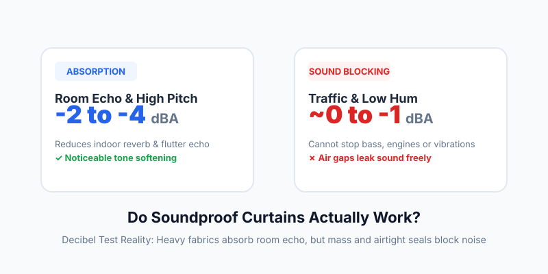

Do Soundproof Curtains Actually Work? A Decibel-Reduction Reality Check
Published Aug 28, 2026 • 8 min read
If you live next to a busy street or noisy neighbors, you’ve probably seen Amazon ads promising that heavy velvet "soundproof curtains" can eliminate 80% to 90% of outside noise. Before you spend $100 to $300 on heavy drapery, here is the honest, acoustic reality: soundproof curtains do not stop outside noise from entering your room.
Quick answer: What they can and cannot do
- What they DO (Sound Absorption): Dense fabrics absorb indoor reflections and high-frequency flutter echo. Your room will sound slightly less hollow and voices may feel less piercing (a 2 to 4 dBA reduction in reverberation).
- What they CANNOT DO (Sound Blocking): Fabric lacks the mass and airtight seal required to block incoming sound waves. Traffic rumble, diesel engines, and bass vibrations will pass right through with virtually 0 dBA reduction.
- The 1% Air Leak Rule: If sound can find a gap around the curtain edges, up to 50% of the acoustic energy still enters the room.
Absorption vs. Blocking: Why Fabric Fails at Noise Isolation
The biggest source of customer frustration comes from confusing two fundamental acoustic concepts:
Softening Sound Inside
Porous materials (curtains, carpets, foam) trap sound waves that have already entered your room, stopping them from bouncing off hard glass and drywall. This lowers indoor echo, making rooms quieter to talk in.
Stopping Sound at the Boundary
Stopping acoustic pressure requires two things: high physical mass (thick glass, concrete, mass-loaded vinyl) and 100% airtight seals. Fabric simply does not possess the density needed to resist sound pressure.
Real Decibel Measurements: Before & After Curtains
To see how curtains perform against real-world noise, we measured average sound levels (using our decibel meter) 1 meter away from a double-pane window before and after installing a triple-weave 1,200 g/m² thermal acoustic curtain:
| Noise Source | Bare Window | With "Soundproof" Curtain | Actual Reduction |
|---|---|---|---|
| Lawnmower / Leaf Blower (High Pitch) | 68 dBA | 64 dBA | -4 dBA (Noticeably muffled) |
| Sidewalk Voices & Dogs Barking | 62 dBA | 59 dBA | -3 dBA (Slight edge taken off) |
| Passing City Bus / Diesel Truck | 72 dBA | 71 dBA | -1 dBA (Hardly perceptible) |
| Low-Frequency Traffic Rumble (<150 Hz) | 76 dBC | 76 dBC | 0 dB (Zero effect on bass) |
Note: A 3 dBA decrease is roughly the threshold where the human ear notices a volume difference. Low frequencies were measured in dBC (see our guide on dBA vs dBC weighting).
The Flank & Gap Problem: Why Sound Bypasses Drapes
Sound behaves much like water or pressurized air. When noise hits a closed curtain, the sound wave naturally bends around the top rod bracket, leaks underneath the hem, and slips through the side gaps.
Even if you buy a specialized Mass Loaded Vinyl (MLV) blanket weighing 20 lbs (9 kg), if it hangs loosely from a rod, sound will simply flank around the edges into your bedroom.
What Actually Works to Quiet a Noisy Window? (Budget to Pro)
If curtains aren't a silver bullet, what should you do instead? Here are three proven upgrades ranked by cost and effectiveness:
1. High-Density Weatherstripping & Caulk (Best ROI)
$10 – $25Most window noise leaks through deteriorated rubber seals and perimeter trim gaps. Replacing worn foam with dense silicone or D-shape EPDM weatherstripping and sealing exterior frame joints with acoustic caulk can drop incoming noise by 3 to 6 dBA instantly.
Test: Slide a sheet of paper through your closed window sash. If it pulls out with no resistance, air (and sound) is rushing through.
2. DIY Window Soundproof Plugs (For Sleepers & Renters)
$40 – $80A removable plug built from 1/2-inch MDF board backed with 1-inch acoustic foam or MLV, edged with compressible neoprene foam. Placed snugly inside the window reveal at night, it creates a true airtight physical barrier, cutting noise by 10 to 15 dBA.
3. Secondary Glazing / Window Inserts (Indow / Magnetite)
$250 – $500 per windowAn interior acrylic or laminated glass panel that presses inside your existing frame with an airtight silicone compression gasket. It creates a 2-to-4 inch dead air gap, matching the sound reduction of full acoustic double-glazing without replacing your original window.
How to Measure Your Window Leakage Step-by-Step
Before deciding on an upgrade, check your baseline noise levels so you can prove whether your changes worked:
- Open our free Real-Time Sound Meter on your smartphone or laptop.
- Hold the microphone 10 cm from the window frame perimeter during peak traffic hours. Note the peak (Max) and average (Leq) decibels.
- Move 1 meter back into the center of the room. If the reading drops by more than 8–10 dBA, the window frame is your main weak point.
- Apply acoustic weatherstripping or install your curtain, and repeat the test at the same time of day.